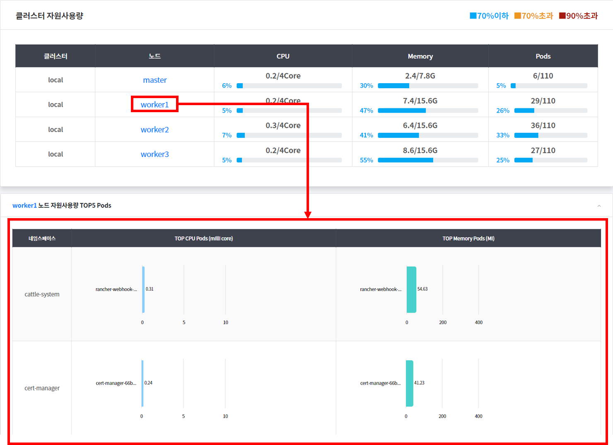

로그인 및 화면 구성과 메뉴 소개
PaaSXpert 포털 화면에 접속하여 로그인하는 방법을 설명 하고 PaaSXpert 에서 제공하는 화
면의 구성과 메뉴의 기능을 설명한다.
1. 로그인
PaaSXpert 에 로그인 하는 방법을 설명한다.
-
PaaSXpert 가 설치된 서버와 동일 네트워크 환경에 있는 PC 에 로그인 한다.
-
인터넷 브라우저를 실행하여 아래와 같이 PaaSXpert 주소를 입력하고 Enter 를 누른다.
-
아이디와 패스워드를 입력하고 log In 버튼을 클릭한다. 로그인 시도할 때 10회 실패 시, 1분 대
기 후 다시 로그인 시도 가능하다.
Note
PaaSXpert 포털 화면은 크롬 브라우저에 최적되어 있다.
2. 화면 구성과 메뉴 소개
PaaSXpert에서 제공하는 화면의 구성을 설명하고 메뉴의 기능을 설명한다.
2.1. PaaSXpert 메인 화면
아래 그림은 PaaSXpert 에 로그인 후 표시되는 메인 화면이다.
화면구성은 다음과 같다.
- 왼쪽: 메뉴 영역
- 오른쪽 상단: 사용자 로그인 계정과 클러스터 목록
- 오른쪽 하단: 메뉴에 해당하는 내용 조회.
2.1.1 메인 화면 설명
메인 화면의 내용은 대시보드 조회로 클러스터별로 노드와 네임스페이스의 현황과 클러스터
자원 사용량, 노드 자원 사용량, 파이프라인 실행 현황 등의 정보를 표시한다.
2.2. PaaSXpert 메뉴
PaaSXpert 는 사용자가 클러스터 별 어플리케이션을 관리할 수 있는 플랫폼 관리 메뉴와 사
용자의 생성 및 권한 관리, 소스 저장소 생성, 파이프라인 생성 등을 할 수 있는 설정 관리 메뉴
로 구분하여 제공한다.
2.2.1. 플랫폼 메뉴의 주요 기능
PaaS 와 관련된 워크로드 조회, PaaS 상세 조회, CI/CD 와 관련된 소스 조회, 배포 관리, 이미
지 레지스트리 조회 메뉴로 구성되어 있다. 설정 관리 메뉴의 주요 기능은 소스 관리, 클러스
터 관리, 소스 저장소 생성, 소스 저장소 권한 관리, 파이프 라인 생성, 사용자 권리의 메뉴로 구
성되어 있다.
2.2.2. 기본 화면 구성
누구나 쉽게 알 수 있도록 TOP 메뉴, LEFT 메뉴 두개로 구성 하였으며 왼쪽 메뉴는 2 단계
로 구성되어 있다. 하위 메뉴를 선택 하면 본문 페이 지가 변경되는 구조로 제공한다. TOP
메뉴에는 줄임 메뉴 기능을 제공한다.
| 본 메뉴 | 축소 메뉴 |
|---|---|
줄임 메뉴 아이콘
제품 로고를 선택하면 메인 페이지로 이동 하고 줄임 메뉴 아이콘을 누르면 메뉴 아이콘만 화면에 노출된다.
3. 화면 위치 확인 및 메뉴 목록과 기능
3.1. 화면 위치 확인
왼쪽 메뉴의 하위 메뉴 클릭 시 화면이 전환 되고 전환된 페이지의 위치는 오른쪽 상단의
네비게이션을 통해서도 동일하게 제공한다.
3.2. 메뉴 목록과 기능 설명
3.2.1. 대시보드
클러스터별로 자원사용 현황과 파이프라인 현황 등의 정보를 조회하는 대시보드의 사용방법
을 설명한다.
3.2.1.1. 클러스터 별 사용현황 조회하기
대시보드 메뉴는 클러스터 별 노드와 네임스페이스의 현황과 클러스터 자원 사용량, 노드
자원 사용량, 파이프라인 실행 현황 등의 정보를 표시한다.
3.2.1.2. 대시보드 화면 설명
-
클러스터 목록
대시보드 제목 오른쪽에 클러스터의 목록이 나오며 특정 클러스터를 선택하게 되면 대시보드 현황을 해당 클러스터 내용으로 표시한다. -
노드
항목은 클러스터 별 노드의 총 개수를 표시한다. -
네임스페이스
클러스터 별 전체 네임스페이스의 총 개수를 표시한다. -
실행중인 컨테이너
항목은 클러스터 별 현재 실행중인 컨테이너의 총 개수를 표시한다. -
중지된 컨테이너
항목은 클러스터 별 현재 중지되어 있는 컨테이너의 총 개수를 표시한다.
숫자를 클릭하면 팝업 창이 뜨며 중지된 컨테이너의 목록을 확인할 수 있다. -
클러스터 자원 사용량
항목은 클러스터의 노드당 CPU, Memory, Pods 의 자원사용량을 표시한다.
자원사용량
- CPU 는 Core 기준, Memory 는 Giga Bytes 단위, Pods 는 개수 단위의 수치를 나타낸다.
(70% 미만 => 파란색, 70% 이상 => 노랑색, 90% 이상 => 빨강색)
3.2.1.3. 노드 상세 조회
노드를 클릭하면 노드 별 Pods 의 자원 사용현황을 아래 표에 표시한다.

-
노드 자원 사용량 TOP5 Pods 항목
위 클러스터 자원 사용량 표에서 선택한 노드에 대해 하위 네임스페이스 별로
구동되는 Pod 중 CPU와 Memory 사용량이 가장 많은 상위 5 개의 Pod 의 현황
을 그래프로 표시한다. -
최근 성공 파이프라인
어플리케이션 배포한 이력 중 최근 성공한 5건을 표시한다. -
최근 실패 파이프라인
어플리케이션 배포한 이력 중 최근 실패한 5건을 표시한다.

3.2.2. 워크로드 조회
어플리케이션 배포 및 상세 조회가 가능하다.
클러스터 및 네임스페이스와 종류를 선택하여 조회가 가능하다.
상세 조회를 원한다면 조회하고 싶은 워크로드의 이름을 클릭하여 상세 조회가 가능하다.
3.2.3. CI/CD
CI/CD 의 소스 및 배포 메뉴의 대한 설명이다.
3.2.3.1. 소스
소스 메뉴는 생성한 Git 조직 별 소스 저장소를 조회할수 있다.
3.2.3.2. 배포
배포 메뉴는 파이프라인 조회 및 실행, 파이프라인 실행 이력 조회, 파이프라인 실행 상세
조회 등이 가능하다.
3.2.4. Tools
Tools의 하위 메뉴들은 새창을 띄워 각 솔루션을 관리할수 있는 페이지로 이동하게된다.
솔루션의 종류로는 Git, Jenkins, Rancher, Harbor 로 구성되어 있다.
솔루션
- Git: 소스를 저장할 수 있는 솔루션 (Gitea 혹은 GitLab 으로 구성 가능)
- Jenkins: 소스의 파이프라인을 설정해주는 솔루션
- Rancher: Kubernetes의 컨테이너 워크로드를 보다 쉽게 관리할 수 있도록 도와주는 멀티 클러스터 관리 솔루션
- Harbor: docker 이미지의 Private Registry 솔루션
| 구분 | 메뉴 | 하위 메뉴 | 설명 | 비고 |
|---|---|---|---|---|
| 플랫폼 관리 | 대시보드 | - 클러스터 별 노드 현황 - 클러스터 별 네임스페이스 현황 - 클러스터 별 노드 상태 조회 - 노드 별 네임스페이스별 파드 상태 조회 - 최근 성공 파이프라인 조회 - 최근 실패 파이프라인 조회 |
||
| PaaS | 워크로드 조회 | - 어플리케이션 배포 조회 - 어플리케이션 배포 상세 조회 - 어플리케이션 재배포 & 스케일 조정 |
||
| CI/CD | 소스 | - 소스 저장소 조회 - 소스 브랜치 별 배포 조회 |
||
| 배포 | - 파이프라인 조회 및 실행 - 파이프라인 실행 이력 조회 - 파이프라인 실행 상세 조회 |
|||
| Tools | Git | - 새창을 띄워 Git을 관리할 수 있는 Gitea 솔루션으로 이동 | ||
| Jenkins | - 새창을 띄워 파이프라인을 관리할 수 있는 Jenkins 솔루션으로 이동 | |||
| Rancher | - 새창을 띄워 도커 이미지를 관리할 수 있는 Harbor 솔루션으로 이동 | |||
| keycloak | - 새창을 띄워 SSO 를 관리할 수 있는 keycloak 솔루션으로 이동 | |||
| 설정 관리 | 환경 설정 | 네임스페이스 관리 | - 네임스페이스 조회 - 네임스페이스 생성 - 프로젝트(Rancher) 생성 |
|
| 사용자 관리 | - 사용자 조회 - 사용자 등록 - 사용자 상세 정보 조회 - 사용자 포털 권한 수정 - 사용자 클러스터 권한 수정 |
|||
| 소스저장소 관리 | - 소스저장소 권한 관리 - 소스저장소 생성 - 신규 Git조직 생성 |
|||
| 파이프라인 관리 | - 파이프라인 생성 - 소스저장소 생성 - 신규 Git조직 생성 |